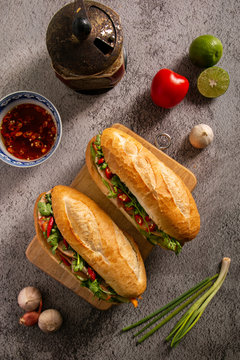

Banh Mi

Description
Banh Mi, a beloved Vietnamese sandwich, is a delightful fusion of flavors and textures that showcases the influence of French colonialism on Vietnamese cuisine. This iconic street food creation features a crusty baguette filled with a harmonious mix of ingredients. The classic banh mi typically includes slices of succulent roast or grilled meat (such as pork, chicken, or beef), a generous handful of fresh herbs like cilantro and Thai basil, pickled daikon and carrots for a sweet and tangy crunch, slices of cucumber, and a smear of creamy mayonnaise or pâté.
The result is a symphony of savory, sweet, tangy, and herbaceous notes that create a mouthwatering experience in every bite, making it a globally cherished sandwich.
Ingredients
- Baguette or French bread rolls
- Sliced grilled or roast meat like pork, chicken, or beef
- Fresh cilantro leaves
- Fresh Thai basil leaves
- Sliced cucumber
- Pickled daikon and carrots
- Mayonnaise or pâté
- Fresh chili peppers or chili sauce
Steps
- Slice the baguette lengthwise, creating a pocket for the fillings
- Spread a thin layer of mayonnaise or pâté on the inside of the baguette
- Layer the sliced meat on the bottom half of the baguette
- Add fresh herbs, cucumber slices, and pickled daikon and carrots on top of the meat
- Optionally, add sliced chili peppers or chili sauce for heat
- Close the sandwich, pressing it gently to compress the fillings
- Serve and enjoy your delicious Vietnamese banh mi sandwich!